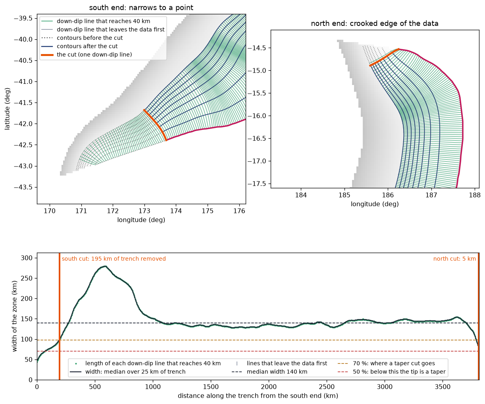
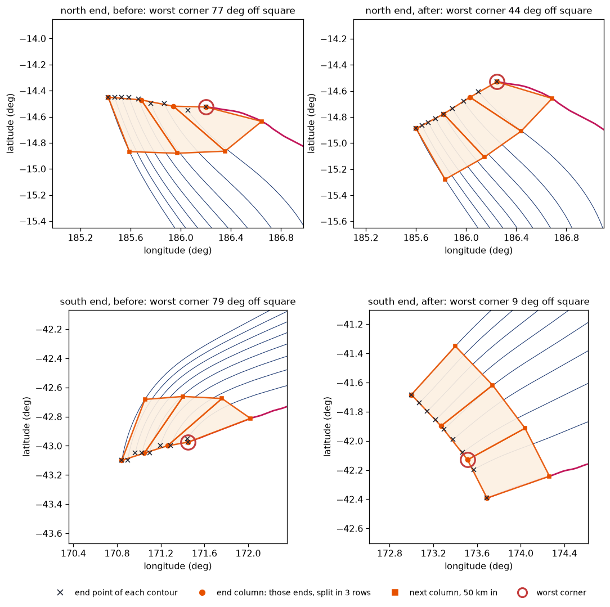
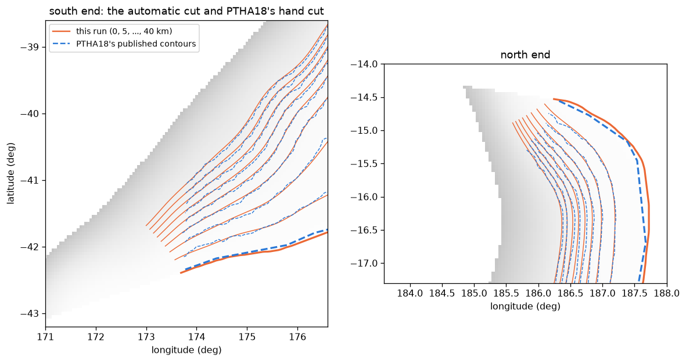

1. Clean ends: cutting the zone's ends square
A zone ends wherever the SLAB data (or the clip window) stops. That end is often crooked, or the zone narrows to a point there. PTHA18 fixed this by hand, ending each zone with a straight line across its contours. Step 1 does the same automatically, but only where the end really is an artefact: a clean end is left alone.
At a glance
Why a crooked end matters
rptha's mesh builder (step 2) pins the first and last column of cells to the contours' own end points: the end column always joins the end of the trench to the end of every deeper contour. If the deep contours stop 50 or 200 km along the zone from where the trench stops, that end column runs along the zone instead of across it, and its cells are slanted slivers, sometimes folded. Their area and dip are then meaningless, and the scenarios that touch them are distorted.
Cutting every contour along the same down-dip line fixes the cause: afterwards all contours start and end on one line across the zone.
Down-dip lines, every 5 km of trench
To measure the zone's width and to have ready-made cut lines, step 1 traces a line of steepest descent of D (the depth below the trench) from every 5 km of trench. Such a line crosses every contour at a right angle. It is followed in 1 km steps (gradient smoothed over 10 km) until it reaches the cutoff (a "complete" line; its length is the zone's width there) or leaves the data.

Where in the code: slab_contours.down_dip_transects().
How crooked is an end? A preview of its end cells
"How far from square" is measured on the cells rptha would actually build there. From the contours alone, step 1 rebuilds the two columns nearest the end: the end column (the contours' end points) and the next one (the points 50 km in along each contour, one cell length), and splits both into the same number of rows step 2's rule would give at 50 km (at least 2). The worst corner of those cells, in degrees away from 90, is the end's deviation.

Where in the code: slab_contours._end_deviation().
The rule, exactly
- Pointed end? If the zone's width at the outermost complete line (median over 25 km of trench) is below 50% of the median width, cut at the first line where the width is back to 70%.
- Otherwise, crooked end? If its deviation is above 45 deg (
MAX_END_DEVIATION_DEG), cut along the outermost complete line: the one from the trench's last point if it reaches the cutoff, else the last one that does inside the data. - Otherwise keep the end exactly as SLAB gives it (makran2's two slanted ends, 33 and 25 deg, are kept, as PTHA18 kept them).
- Check the cut. The new end is measured again. If it is still more than 45 deg off square (the contours still bend there), the cut moves inward one line (5 km) at a time, up to 150 km, and the best one is kept.
- Apply it to every contour: each is cut where it crosses the chosen line (the trench at the line's start point).
Where in the code: slab_contours._end_cuts() (taper_tip=0.5, taper_keep=0.7, smooth_km=25), trim_ends(). Called by below_trench_contours(clean_ends=True), only when every level was found and none is closed.
Compared with PTHA18's hand edits

Every end of the 8 examples
| Folder | End | Deviation | Tip width | Decision | Trench / deepest contour removed | New end |
|---|---|---|---|---|---|---|
| kermadectonga2_v9 | south | 79° | 34% | cut: narrows to a point | 195 / 247 km | 9° |
| north | 77° | 58% | cut: crooked | 5 / 53 km | 44° | |
| southamerica_v9 | north | 26° | 80% | kept | ||
| south | 78° | 109% | cut: crooked | 235 / 235 km | 4° | |
| kurilsjapan_v9 | south (the --auto-clip window's edge) | 24° | 88% | kept | ||
| north | 9° | 93% | kept | |||
| makran2_v9 | west | 33° | 99% | kept | ||
| east | 25° | 89% | kept | |||
| puysegur2_v9 | north | 17° | 66% | kept | ||
| south | 53° | 109% | cut: crooked | 65 / 65 km | 13° | |
| calabria2_v9 | west | 82° | 72% | cut: crooked | 15 / 89 km | 18° |
| north-east | 70° | 43% | cut: narrows to a point | 55 / 135 km | 30° | |
| caribbean2_v9 | south | 86° | 165% | cut: crooked | 0 / 242 km | 37° |
| west | 22° | 69% | kept | |||
| antilles2_v9 | south | 85° | 112% | cut: crooked | 0 / 242 km | 36° |
| north | 61° | 68% | cut: crooked | 0 / 172 km | 7° |
From each folder's data/step1_contours_info.json, key ends: deviation_deg, tip_width_ratio, trench_km, contours_km, deviation_after_deg (step 1's preview of the new end). "0 km of trench" means the cut starts at the trench's last point and only the deeper contours are shortened.
Every new end is within 45 deg of square, the range of PTHA18's own ends. None of the 8 meshes has a folded or collapsed cell, so step 2 never needs a repair.
Changing or switching off the rule
- More or fewer cuts: change
MAX_END_DEVIATION_DEG(45.0) at the top of section 3 oflib/slab_contours.py. It applies to every zone generated afterwards; re-run the zone from step 1. - Pointed ends:
taper_tip(0.5) andtaper_keep(0.7) are arguments of_end_cuts(). - No cuts at all: call
below_trench_contours(..., clean_ends=False)in the zone'ssteps/step1_fetch_slab2.py. The raw ends are also always kept ininfo["contours_untrimmed"]and drawn dotted in the step 1 figure. - What it never does: extend a zone. Where PTHA18 extended a zone beyond the SLAB data by hand (puysegur2's south end), this package does not invent geometry.